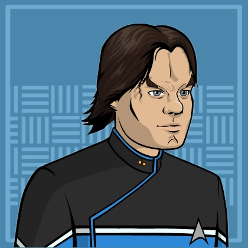
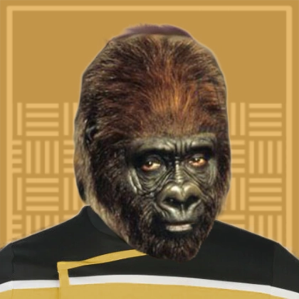
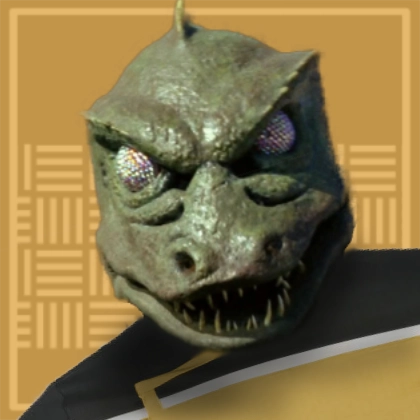
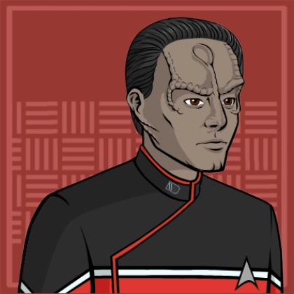
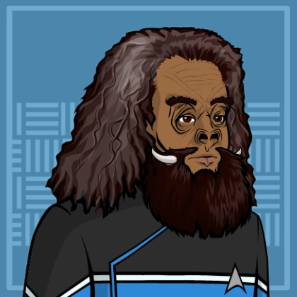
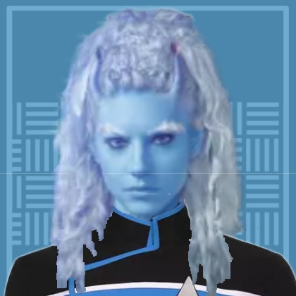
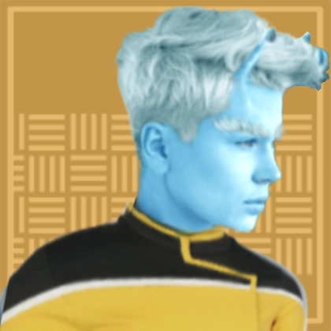

USS Sekhmet
Location:: The Shackleton Expanse
Portrait::
Note:: Pulled back into service to supplement Starfleet's overextended fleet, the USS Sekhmet stands on guard over Narendra station and the Shackleton Expanse beyond.
Description
The USS Sekmet is a Columbia Class cruiser stationed at Narendra Station. After the bombings on the Mars Utopia Planitia shipyards, Starfleet supplemented it's fleet by pulling retired vessels back into service with substantial refits.
The Sekhmet carries a crew of a little over 100 crewman and officers.
Traits
- Federation Starship
- Columbia Class
- Garbage Scow
Namesake
Sekhmet is the Egyptian goddess of war and medicine. The USS Sekhmet is the first of it's name, and was chosen to signal it's equal potential as a protector and threat.
Mission
The USS Sekhmet, has been assigned to Narendra station as an emergency response and tactical strike starship. While Sekhmet has a regular crew, the Narendra Station provides a rotating roster of commanding officers due to stretched personnel resources and the Sekhmet's irregular mission schedule.
Mission Logs
- Sekhmet Log 1.1 - Bacchus' Irresistible Call:
Stardate 67156, Session: 1
The Sekhmet investgated a missing science team at Bacchus-3, only to get caught in the same subspace distortion wave and became stranded. On the planet, they found the team strange entranced by massive monoliths, even willing to die to get inside. The USS Sekhmet was sent to investigate the disappearance of a Starfleet science shuttle at the Bacchus system. When the Sekhmet arrived, it was violently thrown out of warp by a massive subspace distortion wave. With warp-speed rendered impossible and subspace communications completely washed out by background subspace frequencies in the system, they managed to push a probe far enoguh outside the system to get a distress signal out.
Next, an away was sent down to Bacchus-3 to investigate the source of the distortion waves. A small coalition team of Starfleet and Klingon officers seemed entranced by the giant monoliths sticking out of the surface of the planet. Soon, the scientists opened the monoliths, revealing a facility on the inside. Two of the closest scientists threw themselves into the facility, getting vaporized instantly. - Sekhmet Log 1.2 - Escaping from Bacchus-3:
Stardate 67156, Session: 2
The Sekhmet's away team ventured into the spire on Bacchus-3, and found a message from an unknown alien race. They asked the away team to find "the facility". They disabled the subspace distortion wave, and evacuated from the planet and the system, bringing wanted Klingon pirates with them. The Sekhmet's away team managed to retrain the remaining survivors on Bacchus-3 before they ran into the spire's interior. Val mind-melded with the science team's vulcan officer, and found a repeating message in his subconscious: "Find the facility." Sorran Vek found that D'Lok, a Klingon, at a brainwave resonating with the subspace distortion frequency.
Conrak phasered one of the two phaser arrays guarding the entrance, which activated a security system closing the door. Conrak rushed forward and held the door open while Val disabled the second one. The away team entered the spire, leaving a small security team to guard the restrained scientists.
Inside, the engineering specialist Victoria noted the amounts of power running through the spire was no enormous there were very few practical uses for it all. But it was enough power to punch wormholes through space-time. At the center of the spire, the found a control room with consoles for security, power management, subspace field generation, and more. They disabled the security system first, and then turned off the subspace field generator.
An automated hologram projection of an alien introduced themselves as representing the "Displaced." The implored the group to find something called "The Facility" but didn't know where it was. It said its people were in peril and asked for the away team to go save them. It directed the away to to collect a bread-box sized sandstone prism with runes carved along the outside.
The automated messenger finally urged them to leave quickly, because their ship would be in danger. The spires of Bacchus-3 was tractoring the nearest planet towards it, ripping the planet apart as it went. It was rebuilding a new Spire to replace the disabled one. A meteor shower threatened to destroy the Sekhmet and a disabled Klingon vessel. The away team and others on the surface returned to the Sekhmet
The Klingon vessel had arrived to find their "compatriots", and demanded to have them returned. Val convinced the Klingons that if they allowed the Sekhmet to tractor them out of the system to safety, then the fugitives would be returned, with an implication that they would be set free.
However, the commanding officer Vrenta Ewasi instead ordered the Sekhmet to rendezvous with Starfleet vessels answering a distress signal. The Klingons were arrest, and the Sekhmet praised for not only saving the survey team, but also bringing in wanted criminals. - Sekhmet Log 2 - Peas to Meet You:
Stardate 67197, Session: 3
The Sekhmet assisted the USS Constantine in delivering a crucial agricultural exchange to a colony in the Bix system. The crew and passengers of the Constantine had succumbed to a neurotoxin produced by Ice Peas while not in it's natural habitat. The USS Sekhmet was sent to investigate the USS Constantine, a Galaxy Class starship itself tasked with transporting an agricultural exchange from the Colony on Re-Alpha to a struggling colony on Bix. Aboard the Sekhmet, a boarding party found the crew of the Constantine acting strangely. The Executive officer ambushed the party, seemingly paranoid that they were intruders. The Captain was engaged in some sort of wrestling tournament, and various other crew members were exhibiting strong emotional reactions.
The boarding party found the crew was under the effects of a neurotoxin called Wexylin-5C, which would cause different reactions from each person as a stress response. They tracked down the source of this neurotoxin to a plan on board called Ice Peas. The colonists had brought the crop on board and were sharing the food with the crew. The crop had been removed from it's natural habitat and was creating this neurotoxin in response to losing a particular fungus in it's soil. The boarding party was able to reintroduce the fungus into the Ice Pea bushes soil substitute, and bring the crew back to normal.
Crew Members
Department Heads
| Role4 | Rank + " " + file.link + "" | " (" + pronouns + ") - " + Species | "" + Type + "" | Portrait | " > " + Note |
|---|---|---|---|---|---|
| Executive Officer | Lt. Commander Shranval 'Val' | (they/them) - Vulcan-Andorian | Player Character |  | Former Andorian military, now working in Starfleet to make a difference on a new frontier. |
| Science Officer | Lieutenant Sorran | (he/him) - Denobulan | Player Character |  | An expert in hazardous material properties and disposal, with a contingency for every situation and a curiosity for every field of knowledge. |
| Chief of Security | Lieutenant Conrak | (he/him) - Haplorhini, Rondero | Player Character |  | Competitive, fierce, and looking to serve and protect after experiencing the Battle of Wolf-359. |
| Operations Manager | Master Chief Petty Officer Skklarr | (he/him) - Gorn | Player Character |  | A Gorn raised by the overly cautious Kelpians, now working as an engineer on a frontier that's anything by safe. |
Command Division
| Role2 | Rank + " " + file.link + "" | "(" + pronouns + ") - " + Species | "" + Type + "" | Portrait | "> " + Note |
|---|---|---|---|---|---|
| Executive Officer | Lt. Commander Shranval 'Val' | (they/them) - Vulcan-Andorian | Player Character | | Former Andorian military, now working in Starfleet to make a difference on a new frontier. |
| Helmsman | Crewman 2nd Class Relek Tovan | (he/him) - Cardassian | Supporting Character |  | Saved from execution after the Dominion War by Val and now piloting the Sekhmet. |
Sciences Division
| Role5 | Rank + " " + file.link + "" | "(" + pronouns + ") - " + Species | "" + Type + "" | Portrait | "> " + Note |
|---|---|---|---|---|---|
| Science Officer | Lieutenant Sorran | (he/him) - Denobulan | Player Character | An expert in hazardous material properties and disposal, with a contingency for every situation and a curiosity for every field of knowledge. | |
| Ship Nurse | Lieutenant Edo'erax | (she/her) - Edosian | Supporting Character |  | Shares a constant concern for workplace safety with Sorran |
| Ship Counselor | Lieutenant JG Grav Tholgar | (he/him) - Tellerite | Supporting Character |  | Challenges patients to face their inner selves with pointed rhetoric. |
| Botanist | Lieutenant JG Evi | (she/her) - Andorian | Supporting Character |  | Expert in agricultural, ecological, and botanical crises. Also a fellow bonsai enthusiast alongside Conrak. |
| Lab Technician | Ensign Su'Kra | (she/her) - Kelpian | Supporting Character |  | Brought on board the USS Sekhmet to learn under Sorran's wing |
Operations Division
| Role3 | Rank + " " + file.link + "" | "(" + pronouns + ") - " + Species | "" + Type + "" | Portrait | "> " + Note | "VALUES" | Value1 | Value2 | Value3 | Value4 |
|---|---|---|---|---|---|---|---|---|---|---|
| Chief of Security | Lieutenant Conrak | (he/him) - Haplorhini, Rondero | Player Character | Competitive, fierce, and looking to serve and protect after experiencing the Battle of Wolf-359. | VALUES | Haplorhini are the chosen | Service before self | My crew is my clan | Danger and I are old companions | |
| Operations Manager | Master Chief Petty Officer Skklarr | (he/him) - Gorn | Player Character | A Gorn raised by the overly cautious Kelpians, now working as an engineer on a frontier that's anything by safe. | VALUES | my kingdom for some threat ganglia | give me a hyperspanner, and I can fix it | the captain may command her, but this ship is MINE | I'll use my fear to protect others | |
| Engineering Specialist | 5 Bov | (he/him) - Aenar | Supporting Character |  | Constantly excited to work and shares a love of electro-plasma with Skklarr. | VALUES | - | - | - | - |
Passengers
Ship Locations
Facilities
| File0 | "> " + Note |
|---|
Shuttles
| File0 | "> " + Note |
|---|